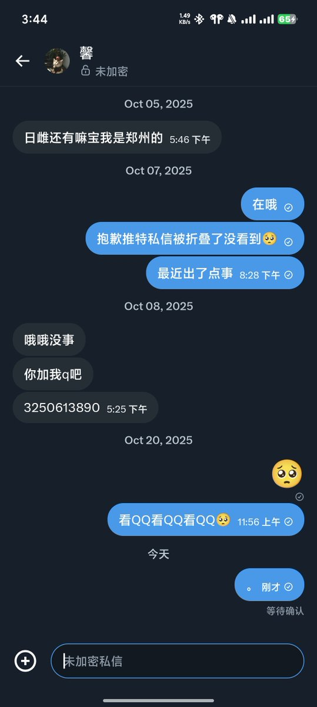
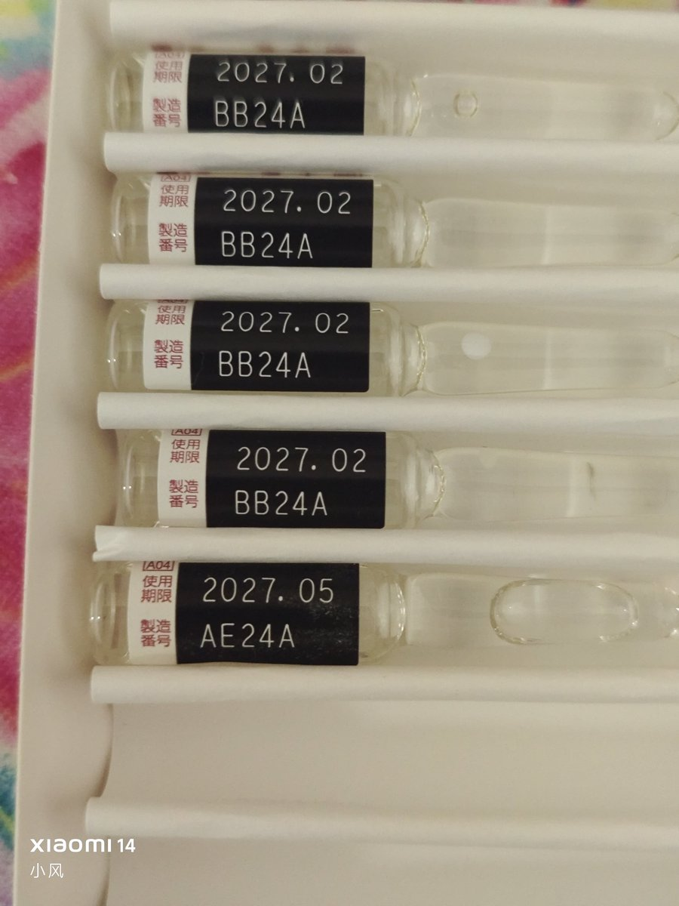

小风
@Starrynightwglf
唉想起来去年十月卖日雌被骗了还是发一下吧，
拿到后就一直不回话然后给我拉黑了...
我不太会开户社工库开出来号码打不通又全平台拉黑了所以一点办法也没有🥲
我太傻了应该先收完钱再给她的
我本来打算寄快递的还专门给她送过去
那天又下大雨那个小区没公交地铁走了一路浑身都湿透了...回去就感冒了嗯


小风
@Starrynightwglf
有郑州的药娘要日雌嘛...现在不打针了，还剩半盒，定160块？（不知道定多少合适...一盒十只是380，半盒出就160好了），明天要去郑州了可以面交 https://t.co/f1fK8ro78M